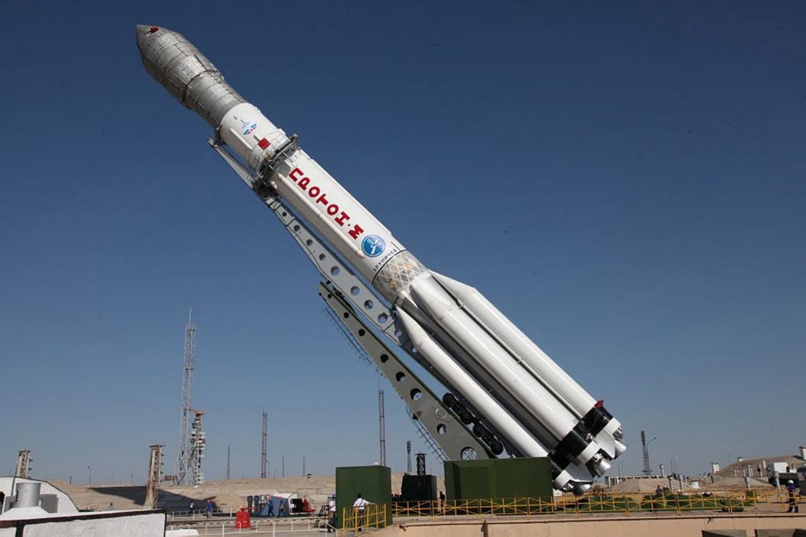
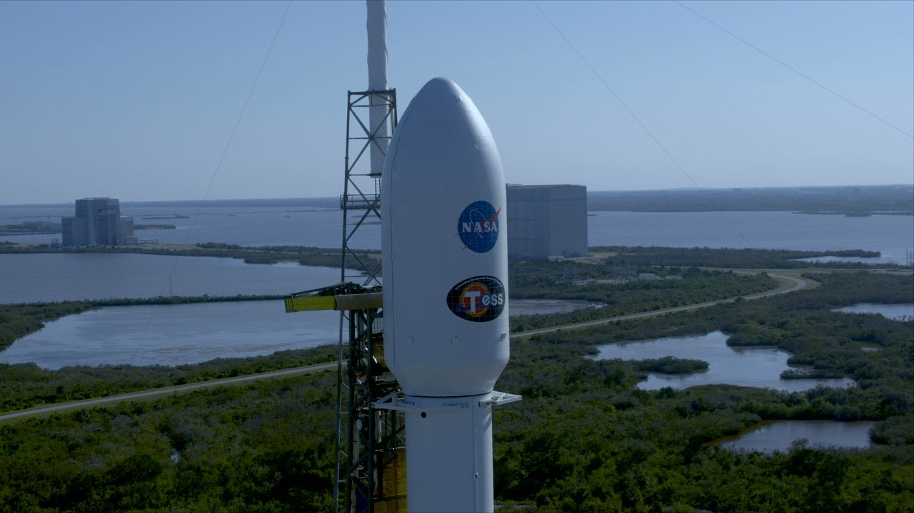

Западные СМИ: Россия капитулировала перед SpaceX на мировом рынке космических пусков
Если еще в 2013 году Россия контролировала почти половину мирового рынка космических пусков со своим крупным парком ракет,
включая ракеты «Протон», то технические проблемы с последними, а также конкуренция со стороны компании SpaceX
и других игроков существенно уменьшили долю России, пишет издание Ars Technica. В этом году она может рассчитывать
лишь на примерно 10 процентов от общего количества коммерческих запусков спутников, в то время как SpaceX проведет
50 процентов таких пусков.В прошлом руководители российской космической отрасли вели жесткие разговоры о соперничестве
со SpaceX, обещая недорогие и надежные услуги по выводу аппаратов на околоземную и геостационарную орбиту. Например,
российская ракетно-космическая корпорация «Энергия» ускоренными темпами разработала новую ракету-носитель «Союз-5»,
бросив вызов SpaceX. Но во вторник главный российский руководитель по космическим полетам, заместитель премьер-министра
Дмитрий Рогозин сделал в интервью телеканалу РБК весьма примечательное заявление о конкуренции России со SpaceX.
SpaceX успешно вывела новый космический телескоп TESS на орбиту
Компания SpaceX провела успешный запуск с космодрома на мысе Канаверал ракеты-носителя Falcon 9 со спутником TESS (Transiting
Exoplanet Survey Satellite) для аэрокосмического агентства NASA, которое будет использовать его для поиска землеподобных
планет за пределами Солнечной системы.После отложенного на день старта запуск прошел штатно. Спустя три минуты
после старта произошло отделение первой ступени Falcon 9. Спустя еще шесть минут ступень совершила успешную вертикальную
посадку на баржу «Of Course, I Still Love You», находящуюся в Атлантическом океане. Примерно через 50 минут аппарат
вышел на заданную орбиту. В рамках его двухлетней миссии аппарат будет заниматься изучением более 200 тысяч звезд,
возле которых, с помощью транзитного метода обнаружения, будет производить поиск новых экзопланет.После отложенного
на день старта запуск прошел штатно. Спустя три минуты после старта произошло отделение первой ступени Falcon
9. Спустя еще шесть минут ступень совершила успешную вертикальную посадку на баржу «Of Course, I Still Love You»,
находящуюся в Атлантическом океане. Примерно через 50 минут аппарат вышел на заданную орбиту. В рамках его двухлетней
миссии аппарат будет заниматься изучением более 200 тысяч звезд, возле которых, с помощью транзитного метода
обнаружения, будет производить поиск новых экзопланет.16 апреля глава SpaceX Илон Маск заявил, что вторую ступень
ракеты после ее запуска можно сохранить с помощью гигантского воздушного шара для вечеринок. Компания SpaceX
известна тем, что отработала технологию возвращения и посадки разгонных блоков на плавающие в океане беспилотные
платформы, а затем их повторного использования.